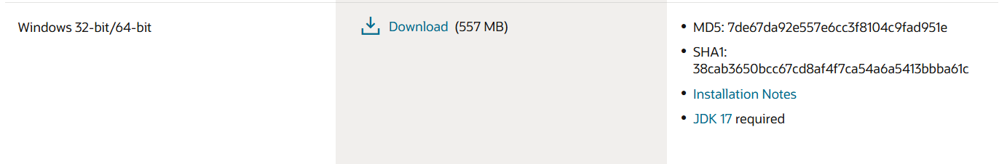
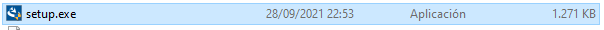
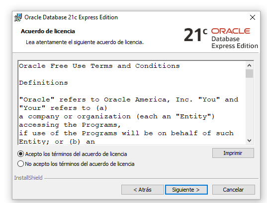
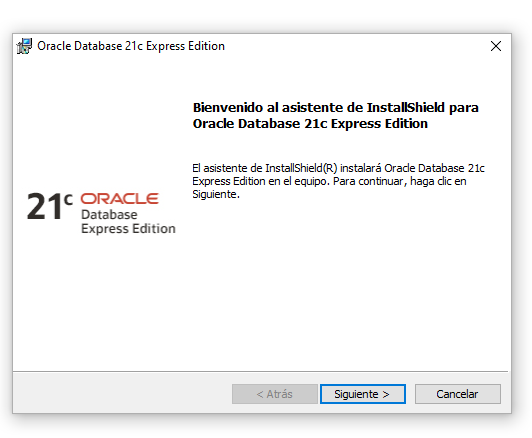
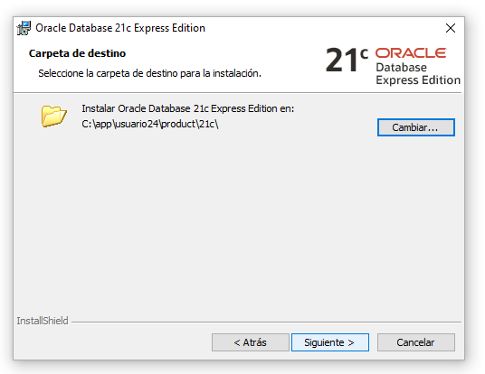
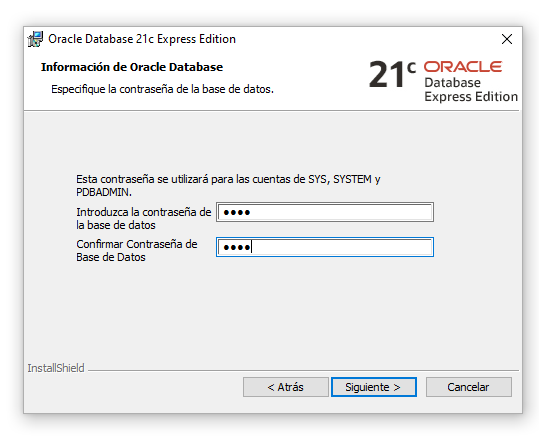
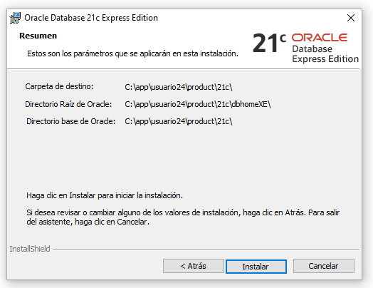
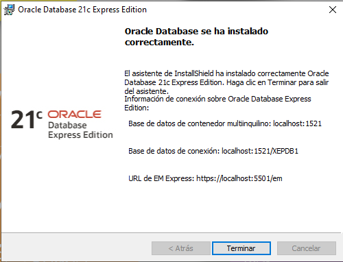

Nos metemos en la pagina web oficial de ORACLE para descargar el software 
Para empezar a instalar buscamos el archivo setup.exe 
Aquí nos pide que aceptemos los Términos y condiciones 
Aquí de momento no hacemos nada, solo le damos a SIGUIENTE 
Aqui le decimos donde queremos que lo instale, yo lo dejo como viene, en caso de que quieras instalarlo en otro disco duro le das a Cambiar y seleccionas la ruta donde quieres instalarlo 
En este paso lo que hacemos es ponerle un contraseña a los usuarios SYS, SYSTEM, PDBADMIN. Le he puesto una contraseña facil ya que es para un proyecto que no va salir a la luz, en caso de que fuese para un entorno de produccion pondriamos una contraseña mas dificil para evitar posibles hackeos. 
En esta captura nos hace un RESUMEN de lo que hemos configurado 
Aqui en esta captura ya ha terminado de INSTALAR el software 